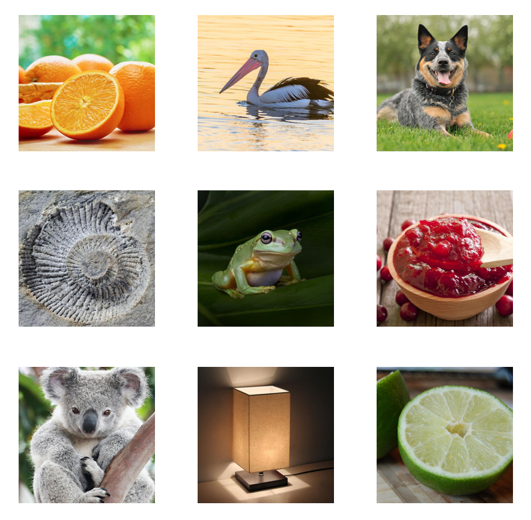
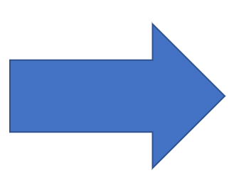
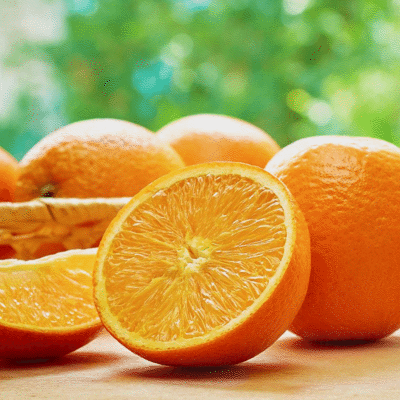

The Conversion function allows users to convert a series of images into a CFS-Crafter-Mask. After conversion, users can modify this sequence with the Modification function, or compare it with other CFS-Crafter-Masks or images using the Analysis function.



Clicking the Add Images button allows users to select multiple images to upload to CFS-Crafter. The order of the images is based on the naming of the image files. Additionally, users can delete unwanted images by checking the selection column and clicking the Delete Selection button.
After selecting the images, users need to input the necessary parameters.
The Image Update Rate is the rate at which the images are updated in the stimulus sequence, similar to the Mask Update Rate in Creation. Click here for more details.
After entering the image update rate, CFS-Crafter will calculate the duration of the stimulus sequence based on it and the number of selected images, which will then be shown in stimuli duration.
Similar to creation, conversion also allows the user to set the target RMS contrast and mean luminace value. Click here for details.